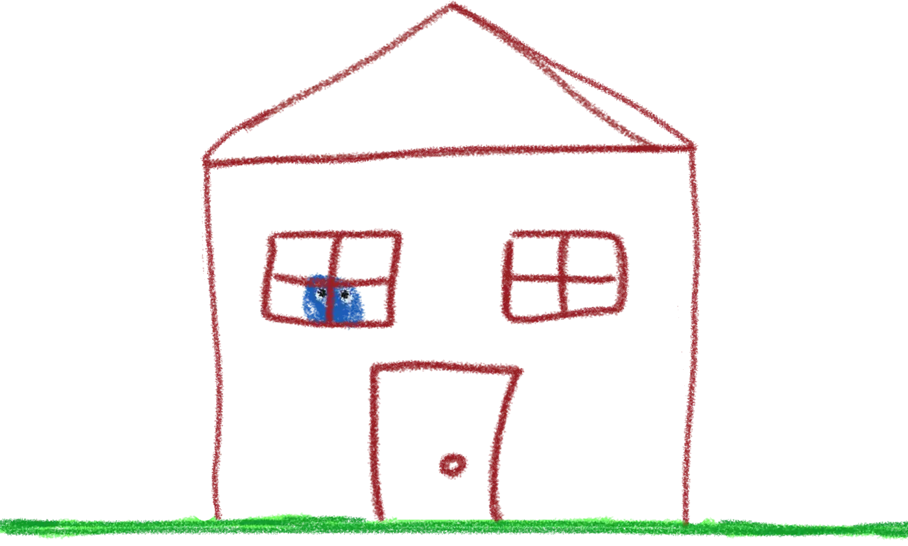
Googly Rocks is the story of a child
who is proud of his rock collection
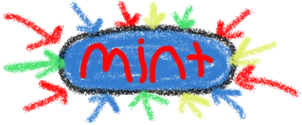
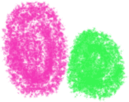
So proud in fact, that he took a picture for all of them. He even added googly eyes to them, because he wanted them to look fun
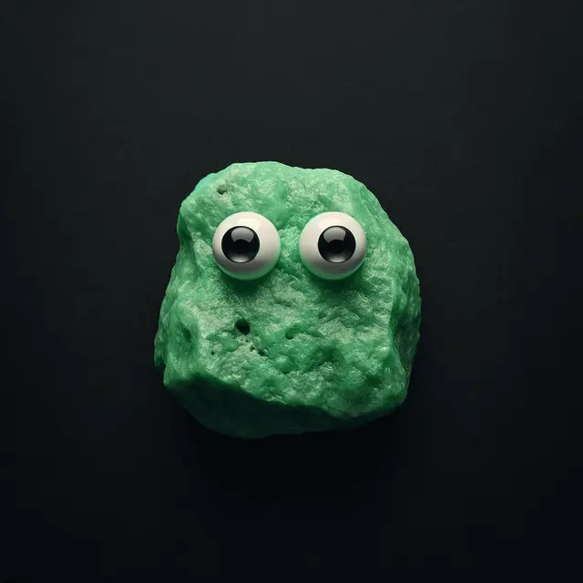
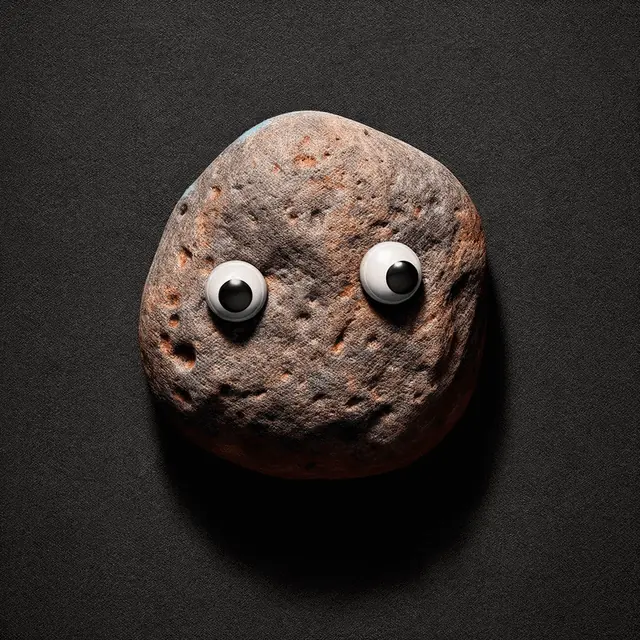
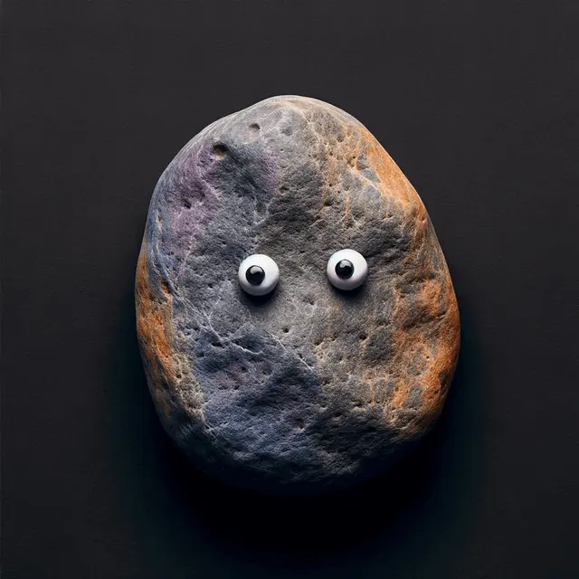
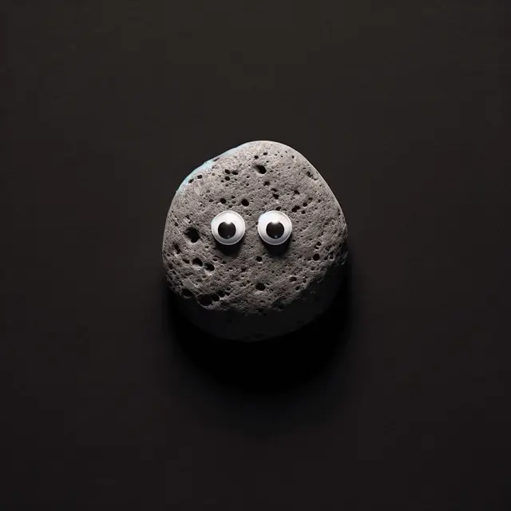
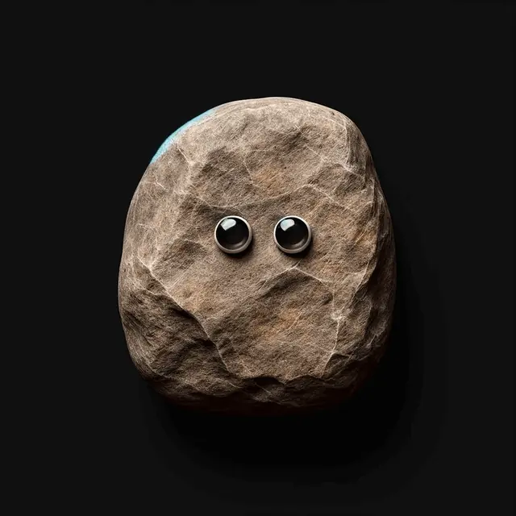
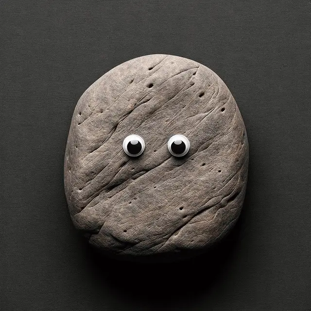
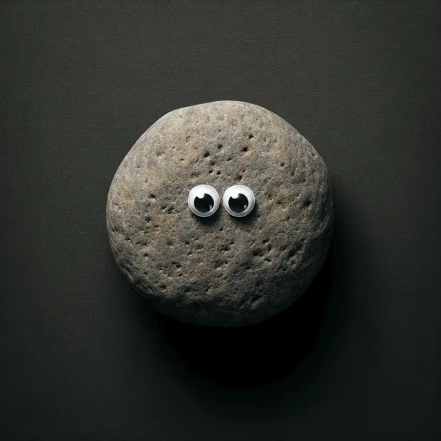
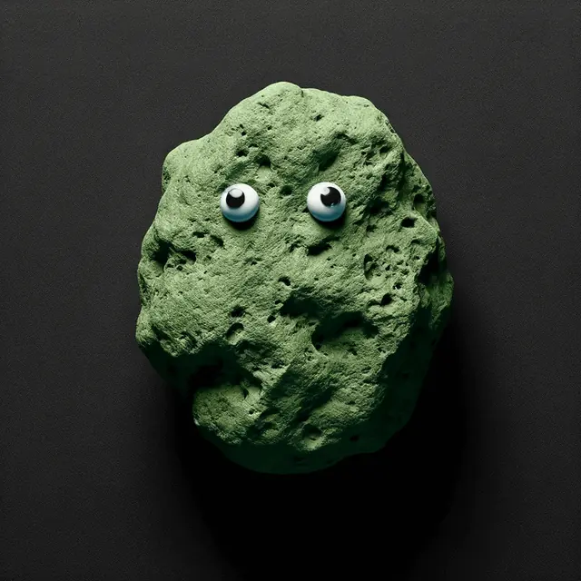
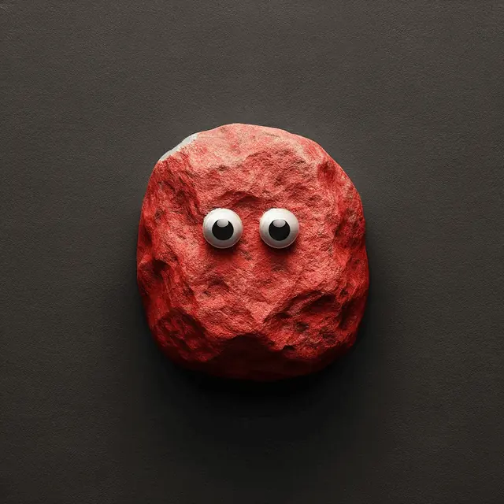
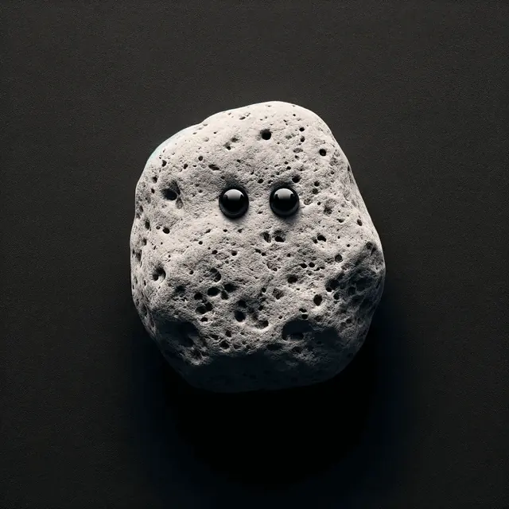
Googly rocks come in various shapes colors and sizes
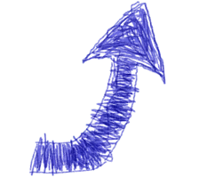
Googly rocks is the first AI rocks collection on Base, it exists at the intersection of cartoon style and photorealism, capturing the essence of both worlds
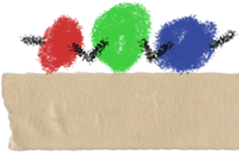
SUPPLY
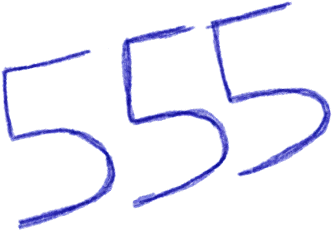
Price
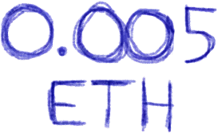
Distribution
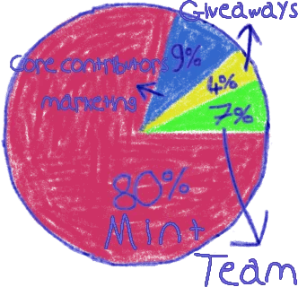
Marketing advisor: web3AGORAZ
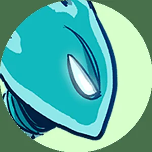